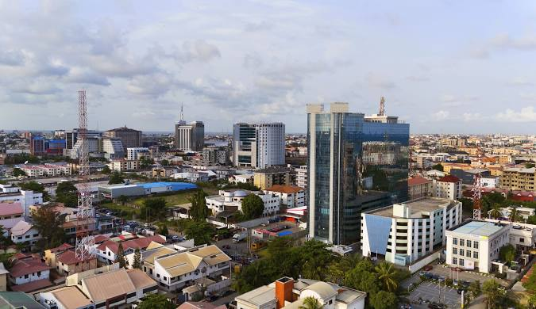

I am currently gaining valuable experience through an internship at a tech Company, where I am actively learning and contributing to the team. I reside in Nigeria and are dedicated to developing my skills in the industry. Outside of work, I enjoy exploring new interests and opportunities. I am single and focused on my career growth in the dynamic Nigerian job market.

Lagos, Nigeria

Lagos, the vibrant economic hub of Nigeria, pulsates with energy and diversity. Known for its bustling markets, rich cultural tapestry, and rapid urban development, Lagos is a melting pot of languages, traditions, and aspirations. From its iconic skyline to its lively waterfront, Lagos embodies both the challenges and the promise of modern African metropolises.